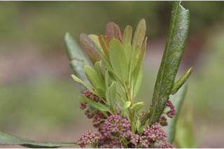
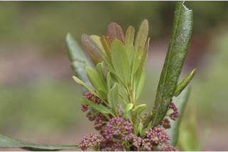
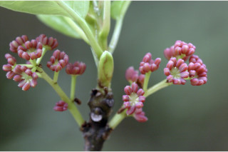
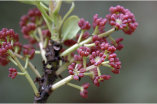
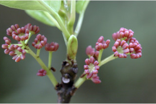
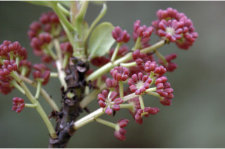

A medium-sized evergreen tree, up to 12 m tall.
12 ಮೀ. ಎತ್ತರದವರೆವಿಗೆ ಬೆಳಯುವ ಮಧ್ಯಮ ಎತ್ತರದ ಮರಗಳು.
12 മീറ്റര് വരെ ഉയരത്തില് വളരുന്ന ഒരു ഇടത്തരം നിത്യഹരിതമരം.
மிதமான உயரமுடைய பசுமைமாறாமரம், 12 மீ. உயரம் வரை வளரக்கூடியது.
Bark brown, lenticellate; blaze brownish.
ತೊಗಟೆ ಕಂದು ಬಣ್ಣ ಹೊಂದಿದ್ದು ವಾಯು ವಿನಿಮಯ ಸೂಕ್ಷ್ಮ ಬೆಂಡು ರಂಧ್ರ ಸಮೇತವಾಗಿರುತ್ತದೆ; ಮಾಡಿದ ಜಾಗ ಕಂದು ಬಣ್ಣದಲ್ಲಿರುತ್ತದೆ.
ശ്വസനരന്ധ്രങ്ങളോടുകൂടിയ, തവിട്ടുനിറത്തിലുളള പുറംതൊലി; വെട്ടുപാടിന് തവിട്ട് നിറം.
மரத்தின் பட்டை ப்ரவுன் நிறமானது பட்டைத்துளைகள் (லெண்டிசெல்லேட்) உடையது; உள்பட்டை ப்ரவுன் நிறமானது.
Branchlets terete, glabrous.
ಕಿರುಕೊಂಬೆಗಳು ದುಂಡಾಗಿದ್ದು ರೋಮರಹಿತವಾಗಿರುತ್ತವೆ.
അരോമിലമായ ഉരുണ്ടിരിക്കുന്ന ഉപശാഖകള്.
சிறிய நுனிக்கிளைகள் குறுக்குவெட்டுத் தோற்றத்தில் வளையம் போன்றது, உரோமங்களற்றது.
Leaves simple, alternate, clustered at twig ends; petiole up to 5 cm long; lamina 7-12.5 x 3-7.5 cm, elliptic-oblong or obovate, apex obtuse with apiculate tip, base obtuse, margin entire, coriaceous, glaucous beneath; secondary_nerves ca. 8 pairs; tertiary_nerves reticulate.
ಎಲೆಗಳು ಸರಳವಾಗಿದ್ದು, ಪರ್ಯಾಯ ಜೋಡನಾ ವ್ಯವಸ್ಥೆಯಲ್ಲಿದ್ದು ಕುಡಿಕೊಂಬೆಗಳ ತುದಿಯಲ್ಲಿರುತ್ತವೆ;ತೊಟ್ಟು 5 ಸೆಂ.ಮೀ. ಉದ್ದವಿರುತ್ತದೆ; ಪತ್ರಗಳು 7 - 12.5 X 3.7-5 ಸೆಂ.ಮೀ. ಗಾತ್ರ, ಅಂಡವೃತ್ತ-ಚತುರಸ್ರಾಕಾರ ಅಥವಾ ಬುಗುರಿಯ ಆಕಾರ ಹೊಂದಿದ್ದು, ಅಗ್ರದಲ್ಲಿ ಸೂಕ್ಷ್ಮವಾದ ಮೊನಚು ಮುಳ್ಳನ್ನು ಹೊಂದಿದ ಮೊಂಡಾದ, ಕ್ರಮೇಣ ಚೂಪಾಗುವ ತುದಿ, ಚೂಪಾಗಿರುವ ಬುಡ, ನಯವಾದ ಅಂಚು,ತೊಗಲನ್ನೋಲುವ ಮೇಲ್ಮೈ ಹೊಂದಿರುತ್ತವೆ,ತಳಭಾಗ ಮಾಸಲು ಬಣ್ಣದಲ್ಲರುತ್ತದೆ;ಎರಡನೇ ದರ್ಜೆಯ ನಾಳಗಳು ಸುಮಾರು 8 ಜೋಡಿಗಳಿರುತ್ತವೆ;ಮೂರನೇ ದರ್ಜೆಯ ನಾಳಗಳು ಜಾಲಬಂಧ ನಾಳ ವಿನ್ಯಾಸದವು.
ഇലകള് ലഘുവും, ഏകാന്തരക്രമത്തില് തണ്ടുകളുടെ അറ്റത്ത് കൂട്ടമായി അടുക്കിയിരിക്കുന്നു; ഇലഞെട്ടിന് 5 സെ.മീ വരെ നീളം; പത്രഫലകത്തിന് 7 സെ.മീ മുതല് 12.5 സെ.മീ വരെ നീളവും 3 സെ.മീ മുതല് 7.5 സെ.മീ വരെ വീതിയും, ദീര്ഘവൃത്താകാര-ആയതാകാരമോ അപഅണ്ഡാകൃതിയോ ആണ്; പത്രാഗ്രം അറ്റത്തൊരു മുനപ്പോടുകൂടിയ ഉപകോണാകാരവും, പത്രാധാരം ഉപകോകാരത്തിലുമാണ്, അരികുകള് അവിഭജിതമാണ്, ചര്മ്മിലപ്രകൃതം, നീലരാശി കലര്ന്ന കീഴ്ഭാഗം; ഏതാണ് 8 ജോഡി ദ്വിതീയ ഞരമ്പുകള്; ത്രിതീയ ഞരമ്പുകള് ജാലിതമാണ്.
இலைகள் தனித்தவை, மாற்றுஅடுக்கமானவை, கிளையின் நுனியில் மட்டும் நெருக்கமாக அமைந்தவை; இலைக்காம்பு 5 செ.மீ. நீளமானது; இலை அலகு 7-12.5 X 3-7.5 செ.மீ., நீள்வட்ட-நீள்சதுர அல்லது தலைகீழ் முட்டை வடிவமானது, அலகின் நுனி மழுங்கியதுடன் சிறிய நீட்சியுடையது, அலகின் தளம் மழுங்கியது, அலகின் விளிம்பு முழுமையானது, கோரியேசியஸ், அலகின் கீழ்பரப்பு மெழுகு பூசினாற் போல் காணப்படும்; இரண்டாம் நிலை நரம்புகள் கிட்டதட்ட 8 ஜோடிகள்; மூன்றாம் நிலை நரம்புகள் வலைப்பின்னல் போன்றது.
Inflorescence axillary racemes; flowers dioecious sometimes monoecious; male flowers devoid of petals; anthers large and pink.
ಪುಷ್ಪಮಂಜರಿ ಅಕ್ಷಾಕಂಕುಳಿನಲ್ಲಿರುವ ಮಧ್ಯಾಭಿಸರ ಮಾದರಿಯವು; ಗಂಡು ಮತ್ತು ಹೆಣ್ಣು ಹೂಗಳು ಪ್ರತ್ಯೇಕ ಸಸ್ಯಗಳಲ್ಲಿರುತ್ತವೆ; ಗಂಡು ಹೂಗಳು ತೊಟ್ಟು ರಹಿತವಾಗಿರುತ್ತವೆ; ಪರಾಗಾಶಯಗಳು ದೊಡ್ಡ ಗಾತ್ರದಲ್ಲಿದ್ದು ನಸುಗೆಂಪು ಬಣ್ಣ ಹೊಂದಿರುತ್ತವೆ.
പൂങ്കുലകള് കക്ഷീയ റസീമുകളാണ്; പൂക്കള് ഡയീഷ്യസാണ് ചിലപ്പോള് മൊണീഷ്യസാണ്; ആണ്പൂക്കള്ക്ക് ദളങ്ങളില്ല; കേസരങ്ങള് വലുതും പിങ്ക് നിറത്തിലുമാണ്.
இலைக்கோணங்களில் காணப்படும் ரெசீம்; மலர்கள் ஒர்பாலானவை, சிலசமயங்களில் ஓரகம் கொண்டவை; ஆண்மலர்கள் அல்லி இதழ்களற்றவை; மகரந்ததாள் பெரியது மற்றும் இளஞ்சிவப்பு (பிங்க்) நிறமானது.
Drupe, ovoid or oblong, pericarp woody, 1-seeded.
ಕಾಯಿಗಳು ಡ್ರೂಪ್ ಮಾದರಿಯವು, ಆಕಾರದಲ್ಲಿ ಅಂಡಾಕಾರ ಅಥವಾ ಚತುರಸ್ರಾಕಾರ ಹೊಂದಿದ್ದು ಫಲಾವರಣ ದಾರು ರೂಪದಲ್ಲಿರುತ್ತದೆ.
കായ, ഒറ്റവിത്തുളളതും, കനത്ത പുറംതൊലിയോടുകൂടിയ, അണ്ഡാകാരമോ ആയതാകാരമോ ഉളള ഡ്രൂപ്പ് ആണ്.
உள்ளோட்டுத்தசைகனி (ட்ரூப்), முட்டை அல்லது நீள்சதுர வடிவானது, வெளிப்புற கனிசுவர் (பெரிகார்ப்) தடித்தது, ஓர் விதையுடையது.
 

 


